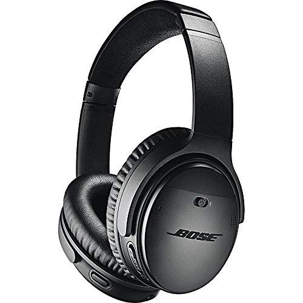
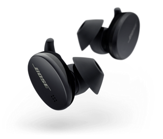

Wide range of devices for all pockets
We only feature the best

BOSE QUIET-COMFORT
Get for Ksh. 49,999


BOSE SPORT BUDS
Get for Ksh. 15,769
BOWERS & WILKINS PX7
Get for Ksh. 74,999
SONY MDR-1AM2
Get for Ksh. 54,499
JBL TUNE 700BT
Get for Ksh. 9,499